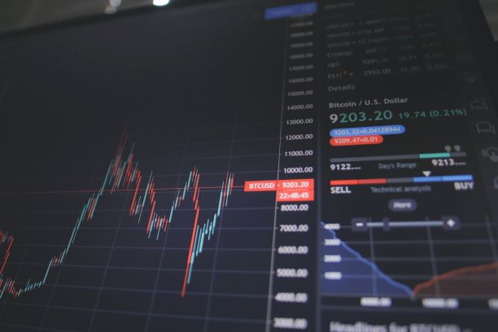

The emergence of currency
To pinpoint the first use of currency is difficult for two reasons:
A). The archaeological record suffers from 'survivor bias', and does not guarantee our notions about the starting-point for currency.
B). It depends on the way in which currency is defined. Yuval N. Harari argues for "an intersubjective (existing only in the collective human mind) belief that is called money".
That is to say, we could suggest that anything with underlying value that has been standardized and exchanged could be called 'money'.
To illustrate this viewpoint: if we were to value one clay pot at three batches of grain, we could theoretically call both items a form of currency.
This problem in defining money makes it harder to determine a starting point of currency.
The emergence of currency - II
Perhaps a decent working theory to defining currency is that it is the (somewhat standardized) tokenization of something of value.
Among historians and archaeologists this definition is a popular way of thinking about money.
When it comes to the archeaological record, a common notion is that the first form of currency emerged in Mesopotamia.
People were able to exchange goods, such as grain, in central depots for a set number of tokens made of clay.
These clay tokens marked a particular value that could be exchanged for a small number of other local services, goods and responsibilities.
Cacao equals currency?
As societies grew more complex and wished to trade outside of their local communities, mere administrative markers such as clay tokens did not suffice.
That's one of the reasons why coins (with the use of somewhat scarce metals) were minted.
But it is also the reason why other forms of currency with underlying value were used:
The Romans are believed to have paid soldiers in salt - forming the etymological foundation of the word 'salary'.
This present-day word comes from the latin term salarium, with sal meaning salt.
There is doubt about the historic accuracy of this form of payment, but Roman authors such as Pliny form some support for this phenomenon.
The Aztec empire was quite an advanced society; they could sustain rather large cities with complex economies.
Standardized currency formed a foundation to their intricate economies.
They had several markers of value, but cacao beans were at the top of this currency scale.
The Aztecs believed cacao was a gift from the gods, and reserved chocolate, chocalate milk and other products for the highest classes in society.
The Aztec's high valuation of cacao goes to show that scarcity combined with belief drives up value.
This occurence is an essential mechanism that has recurred in economic history for as long as we can remember.
In today's terms, we might call it 'fear of missing out', but perhaps it has more to do with human physiology or the essence of nature itself.
Standardization and transmutability
As trade become less local, there was more need for transmutable currency.
For instance, with the rise of the Roman empire, a dependable currency was important for administrative purposes, practical reasons and cohesion.
Because the Roman coin was used across its empire, governors were able to report and collect taxes.
Indeed, it is hard to think of a Roman empire without the presence of coin in it; how else could they sustain an intricate economy and administration across the
Mare Nostrum and deep into Europe?
Such widespread use of the same coin required a 'standardization' of money; coins should be as close to pure duplicates of one another as possible.
Technological progress
This process of standardizing money went on for many ages, and across multiple empires and civilizations.
A recurring issue that needed solving is fraud.
Complicated craftsmanship and other methods were an effort to hinder the production of counterfeit money.
Technological advancements obstructed other forms of fraud: ribbles on the side of coins were invented so that people could not unnoticeably scrape of the sides of coins (made of valuable materials).
The digitalisation of currency is a quite modern technological advancement of money.
It may inhibit fraud and some other forms of crime as it helps authorities track money streams and analyse the plausibility of earnings.
Digitalisation
Ideas of digitalizing currency for the general public arose in the 1980s.
Some popular digital currency systems were Digicash, E-gold and Paypal.
Banks started offering internet banking too, and it has now become their preferred way of payment processing.
The digitalisation of money has very notable societal effects.
It is now becoming tied to people's real-life 'metaverse', where money is tied to 'the internet of things'.
Some people dislike the increased outside knoweldge of their life, capital and spending habits that the cashless society brings about.
As explained in our article Gold as Wealth Insurance, this increased insight and potential management of personal wealth by authorities is one of the reasons why some people seek ways to protect their personal agency and monetary data.
This fear of losing personal sovereignty is one of the reasons why bitcoin and crypto-currencies have become so popular too.
In sum, the digitalisation of currency has brought about societal changes and sparks state-philosophical debates.

The potential future of money: crypto currencies and the minting of data
An example of digital money connecting to 'the internet of things' is blockchain and NFT (non-fungible token).
With the help of blockchain and NFT exchanges, people are able to do so much more than to make and proof payments.
This technology allows people to 'stamp' events, images, logistical data and more on a blockchain: it proves that an event occured in the past.
Such logging of events allows projects like this mango supply chain optimization.
It shows how a technology that was designed for currency has expanded into a system that is practical for a multitude of applications and even can help decrease pollution through optimization of said applications.
And, indeed, crypto 'currencies' are being adopted & implemented in an increasing number of industries and companies.
The Chinese invention of E-yuan supports the notion that crypto technology could be the future of money and a more data-rich and interconnected society.
(End of Gallery)